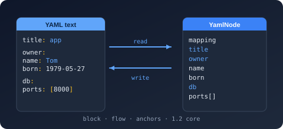

Bodu.Text.Yaml.Writer Namespace
- Package
-
Bodu.Text.Yaml 1.3.0

Purpose
Bodu.Text.Yaml.Writer is the emitting counterpart of Bodu.Text.Yaml.Reader in Bodu.Text.Yaml: a forward-only writer that produces a block-style YAML document into an IBufferWriter<byte>, in the manner of Utf8JsonWriter. The YamlSerializer and both DOMs (WriteTo) emit through it, and a custom YamlConverter<T> writes its value through it.
Key types
- Utf8YamlWriter - the
ref structwriter:WriteStartMapping/WriteEndMapping,WriteStartSequence/WriteEndSequence,WritePropertyName, and the scalar writersWriteString,WriteInteger,WriteDouble,WriteBoolean,WriteNull. - YamlWriterOptions -
IndentSize,MaxDepth, andNewLine.
Example
using System.Buffers;
using System.Text;
using Bodu.Text.Yaml.Writer;
var buffer = new ArrayBufferWriter<byte>();
var writer = new Utf8YamlWriter(buffer);
writer.WriteStartMapping();
writer.WritePropertyName("host");
writer.WriteString("localhost");
writer.WritePropertyName("port");
writer.WriteInteger(8080);
writer.WriteEndMapping();
string yaml = Encoding.UTF8.GetString(buffer.WrittenSpan); // "host: localhost\nport: 8080\n"
Notes
- Safe scalar presentation. Each string is written plain when unambiguous and double-quoted otherwise, so a value such as
"yes"or"8080"reads back as a string; empty collections are emitted as{}/[]so they round-trip as empty rather than null. - Block style only. The writer emits block mappings and sequences with configurable indentation; anchors, aliases, tags, and comments are not written.
- Shared state. The writer is a
ref structwhose state lives behind one shared reference, so a copy passed by value continues the same document. - See also: the Bodu.Text.Yaml introduction and the Using YAML guide (Pattern 9 - Drive the low-level reader and writer).
Structs
- Utf8YamlWriter
Provides a forward-only writer that emits a YAML document in block style to a UTF-8 buffer, in the manner of Utf8JsonWriter.
- YamlWriterOptions
Provides options that configure how Utf8YamlWriter emits YAML.